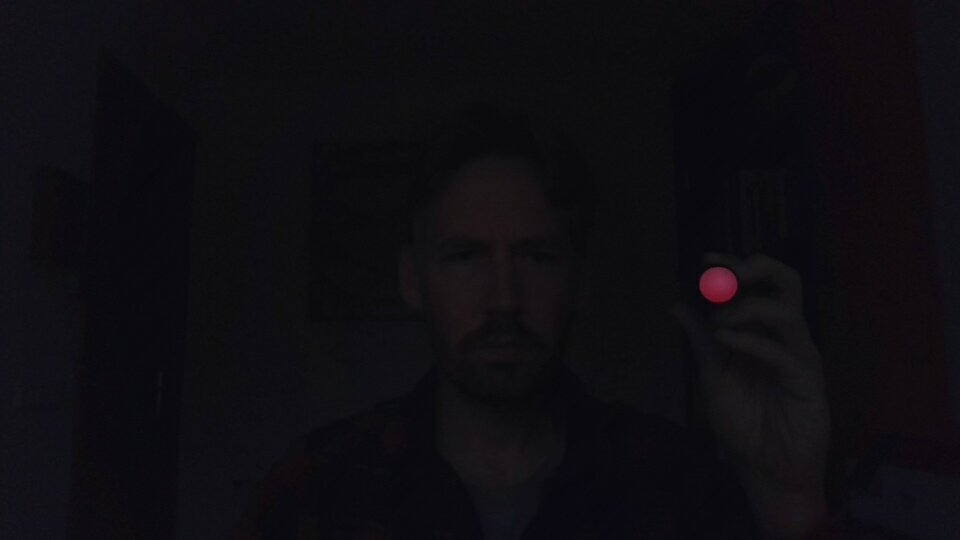
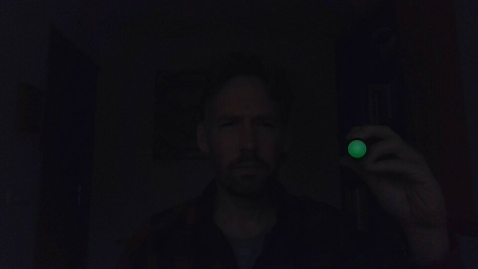

Pictionary Air is a modern take on the classic Pictionary game in which players draw in the air with an electronic pen instead of on paper. Using a special AR app on a smartphone or tablet teammates can see what is being drawn.
I wanted to use the Pictionary Air pen with my laptop instead of my phone so I could play Pictionary on a larger screen, or use the pen as an alternative input device.
Read on to learn how I did this.
The general approach
The Pictionary Air pen has a tip that can light up green or red. If you turn on the pen it lights up red. Pressing a button on the pen, turns the tip green, effectively putting it in drawing mode. To detect the position and color of the tip, we can use the webcam to capture real-time video and process it with OpenCV. We can apply color masking to isolate the red and green colors used by the pen.
To do color masking, we use OpenCV’s inRange() function to create a binary mask for each color we want to detect. The function takes a single frame and a range of colors we want to include in our mask. This range is specified as a lower and upper color threshold, which helps us include only pixels with values within a specified range. Pixels outside of this range are set to black in the mask, while pixels inside the range are set to white.
For instance, to create a mask that match all green pixels, we would write:
# convert a frame to HSV color space
hsv = cv2.cvtColor(frame, cv2.COLOR_BGR2HSV)
# setting the lower and upper range for mask_green
lower_green = np.array([55, 40, 40])
upper_green = np.array([95, 255, 255])
mask_green = cv2.inRange(hsv, lower_green, upper_green)Note that in this code, we first convert a camera frame (which is, by default, in BGR color space) to HSV color space. Using HSV color space makes creating a mask easier because HSV separates color information from brightness information.
Once we have our masks, we use the findContours() function to detect any contours in the binary images. Contours are the boundaries of objects with similar color or intensity values, so we can use them to locate the tip of the Pictionary Air pen. The function returns a list of contours, and we use the contourArea() function to find the contour with the largest area, which is likely to be the pen’s tip.
contours, _ = cv2.findContours(mask_green.copy(), cv2.RETR_EXTERNAL, cv2.CHAIN_APPROX_SIMPLE)
# if the contours are formed
if len(contours) > 0:
# find the largest contour
contour = sorted(contours, key = cv2.contourArea, reverse = True)[0] After locating the pen’s tip, we can calculate its position and move the mouse pointer to the corresponding location on the screen. Additionally, we simulate a left-click by pressing and releasing the left mouse button when a green tip is detected and lost, respectively.
# get the radius and position of the enclosing circle
((x, y), _) = cv2.minEnclosingCircle(contour)
x, y = int(x), int(y)
# move the mouse
mouse.position = (int(x * factor_x), int(y * factor_y))
# press the button is not pressed already
if not pressed:
pressed = True
mouse.press(Button.left)One slight hurdle
Please take a look at the picture, taken through my webcam, of me holding a Pictionary Air pen:
Is there anything that stands out to you? Is it my handsome face, my wrinkled shirt, or my messy bookcase?
Notice the tip of the pen. Can you tell its color? It’s impossible to discern because bright light sources appear as white when seen through my laptop’s webcam. Unfortunately, this creates an issue since we need to accurately detect whether the pen’s tip is red or green.
A simple solution
The solution is luckily quite simple. We just shorten the exposure time of the webcam.
For this, we can use the v4l2-ctl Linux command line tool.
v4l2-ctl -c auto_exposure=1 -c exposure_dynamic_framerate=0 -c exposure_time_absolute=10The picture now looks like this:

After adjusting the exposure time, we can clearly see the color of the tip of the pen. Pressing the button on the pen turns its tip green.

Now we can easily detect the position and color of the pen using the approach explained above. Additionally, shortening the exposure time hides irrelevant objects, such as my red shirt, that could throw off the detection algorithm.
See it in action
Check out the video below to see it in action.
For the complete program check out this repository. You don’t need to first adjust the exposure time before running the program. The Python program calls v4l2-ctl for you.
This program runs fine on my laptop, but you likely need to adjust webcam settings to make it work for you. Also, you need to run Linux. If this program doesn’t seem to function, try experimenting with the parameters in the calls that are made to the v4l2-ctl tool in the set_short_exposure_time and restore_camera_settings functions.
Enter v4l2-ctl --all on the command line to see the available options.